同样是一片瓷砖，为什么在展厅看着那么和谐漂亮百看不厌，到了自己家就各种问题各种不完美？淘宝卖家秀跟买家秀为啥差别就那么大？
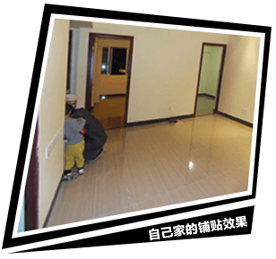

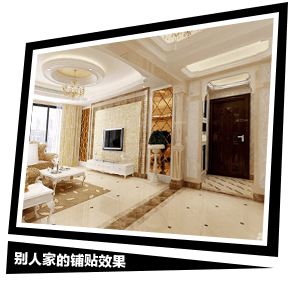
铺贴的泥水师傅说是砖质量不好，瓷砖店导购又说是师傅没铺好，那么，到底是砖的问题还是铺得不好？实际上，一个好的贴砖师傅完全可以解决很多铺瓷砖上的微小缺陷。
本期瓷砖百科邀请到有多年瓷砖生产铺贴服务经验的——“特地大师傅”，手把手教你掌握铺贴基本技巧和铺贴方案选择，把瓷砖卖家秀搬回家里，制霸铺砖界！
简述：在装修过程中， 抛光砖适合多个空间，其运用也最为广泛。但由于抛光砖由瓷质耐磨砖加工而成，表面有肉眼看不到的微细孔，铺贴时应防止弄脏。
难点：易有色差
窍门：铺前抹蜡防弄脏，色号尺码要配对
特地大师傅手把手教全抛釉铺贴招式
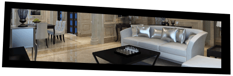
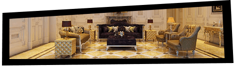
简述：相比起抛光砖，抛釉砖表面更为华丽多样，能够做出更富丽堂皇的家居装饰效果，但全抛釉瓷砖所使用的材质比较特殊，用水泥来铺贴的话不太协调和匹配，会导致在铺贴之后的使用中出现开裂等问题。
难点：表面易刮花，铺地易开裂
窍门：铺好再撕保护膜，瓷砖粘贴剂比水泥效果好
特地大师傅手把手教全抛釉铺贴招式
简述：作为瓷砖界的白富美，微晶石以其富丽堂皇的装修效果吸引着大众的眼球。但是产品好看，对铺贴的要求也很高。
难点：微晶层易受伤，加工铺贴需注意
窍门：预演铺贴，寻找最合适的铺贴方案再施工
特地大师傅手把手教全抛釉铺贴招式
1 根据微晶玉石产品编号、色号还有规格等标识，将产品分门别类的堆放和使用，同一平面铺贴同一型号的产品而且要使用相同的色号。
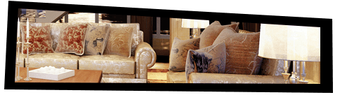
基础的铺贴技巧可以保证产品日后使用保持良好的效果，但采用什么样的铺贴方案则影响着使用的美观程度和品味，因此，瓷砖要铺贴好，还需要有合适的铺贴方案。
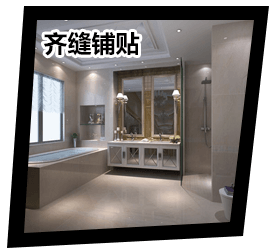
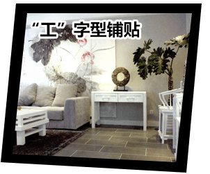
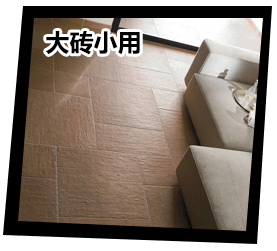
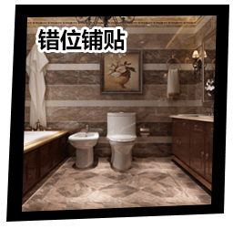
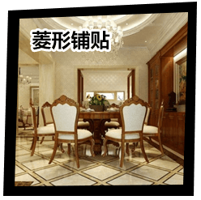
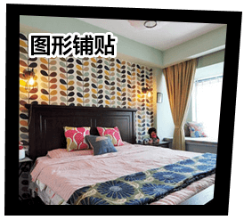
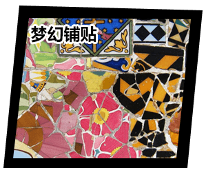
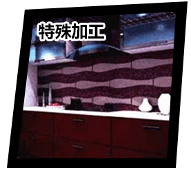
掌握好铺贴施工技巧和方案选择后，就可以根据个人喜好选定风格方案。一般来说，重视设计服务的瓷砖企业能提供更完善的案例，并提供配套的解决方案供客户选择。下面让我们看看特地陶瓷的瓷砖铺贴卖家秀